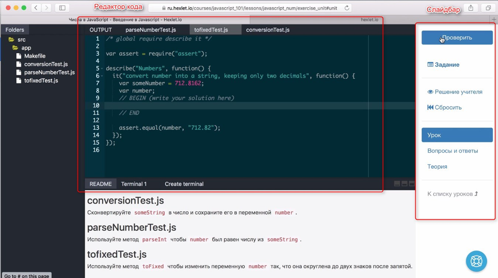
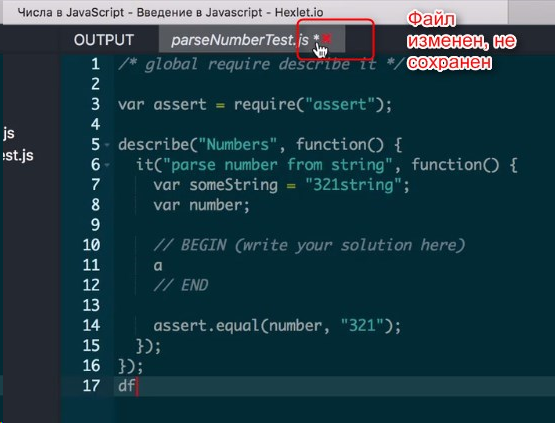

В вопросах-ответах можно задавать вопросы автору.
Из практики можно всегда по "Теория" перейти к уроку.
По-умолчанию редактор открывается в файле, который нужно изменятью
В терминалах есть tab с заданиев в readme.
Терминал - доступ к командной строке. Можно выполнять любые команды, запускать тесты, доступ к виртуальной машине.
При работе с кодом видны маркеты "begin" и "end". Технически - для автора используются при проверке кода. Не стирать. Код решения нужно писать между ними.
В одном файле может быть несколько маркеров.
В некоторых ситуациях для решения нужно создавать файлы (например из контекстного меню).
Несохраненный файл отмечен звездочкой. Когда звездочка пропадает - файл записан. Иногда бывают ошибки автосохранения.
